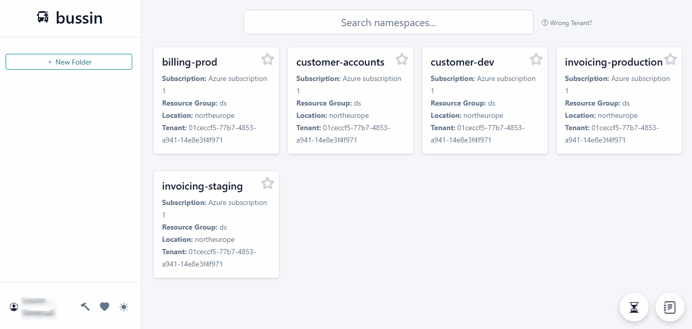
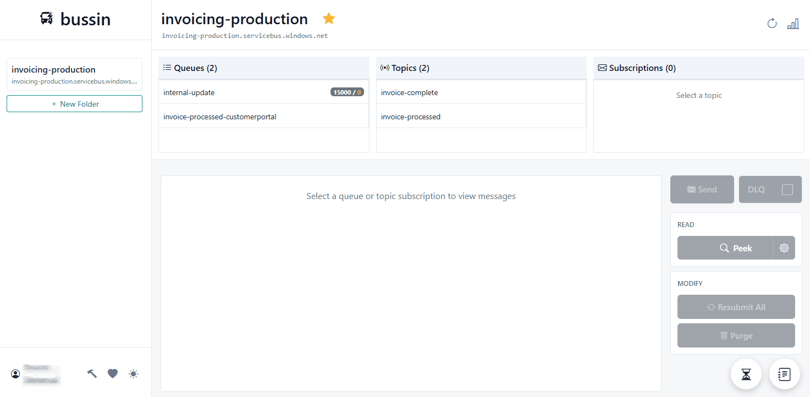
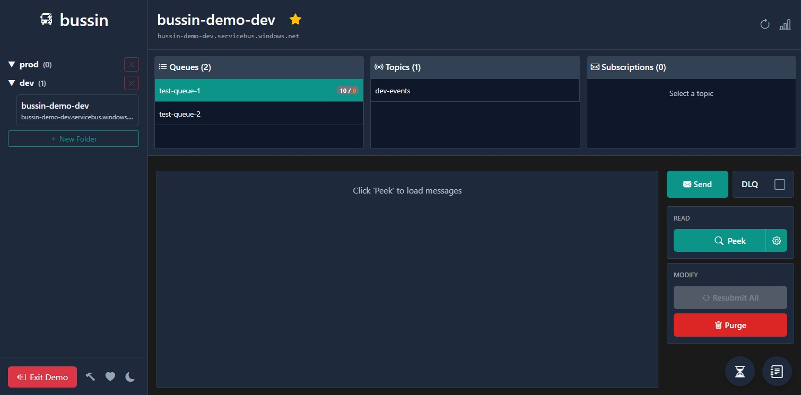

Live app access
Open app.bussin.dev to manage queues, topics, and messages with a polished dark interface built for Service Bus workflows.
Message bus UI
A modern interface for Azure Service Bus messaging. Visit the live app at app.bussin.dev, read product updates, and access the tools your team needs.
Open app.bussin.dev to manage queues, topics, and messages with a polished dark interface built for Service Bus workflows.
Read practical blog posts that explain new features, tooling, and best practices for Azure Service Bus development.
Direct links to the app, blog, and about page make it easy for visitors to get where they need to go quickly.
These previews reflect the Bussin app experience: dark mode, teal accents, rich filters, and message inspection flows.

Namespace filtering with folder organization for queues and topics.

Deep search and peak filtering make it easy to find the right messages.

Dark mode keeps the UI comfortable during longer sessions.

Advanced peek view gives direct message inspection and event context.
Explore cross-platform Azure Service Bus tooling for developers who need Mac, Linux, and Entra-ready alternatives.